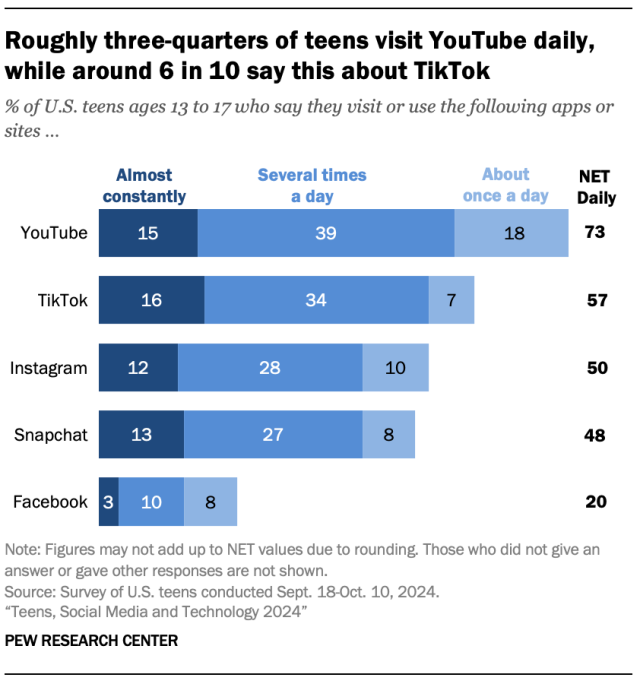

Working as an algorithmic engineer at companies like Meta or TikTok presents a moral dilemma for Catholics, especially when their work contributes to designing algorithms that encourage addictive scrolling behavior. These systems are often optimized not for the wellbeing of the user but for maximizing time on platforms for the sake of advertisement revenue and engagement at the expense of the user’s mental health and attention span. According to a study by M. Faverio and O. Sidoti [1] “roughly half of teenagers say they go on Instagram or Snapchat every day” with “six-in-ten visit[ing] TikTok daily.” From a Catholic worldview, this raises the question: how can one balance working on these algorithms while holding Catholic principles in human dignity and moral responsibility?
Pope John Paul II’s Centesimus Annus reminds us that economic and technological systems must always prioritize the dignity of the person, and therefore the dignity of work. In Chapter V. State and Culture, he emphasizes the importance of fostering a moral environment that supports the development of individuals and children. He [2, Point 47] writes of them to grow “in a moral environment conducive to the growth of the child's personality; the right to develop one's intelligence and freedom in seeking and knowing the truth”. This call to uphold morality stands in stark contrast to digital environments designed to capture attention rather than promote truth or personal growth. When algorithms manipulate users toward endless scrolling or consumption, they violate this principle by treating the person as a product. For Catholic Engineers, this teaching challenges them to build systems that support people rather than seeking engagement metrics or revenue.
In Laborem Exercens, also by Pope John Paul II, he adds to the dignity of human labor by expressing that work is a share in the activity of the Creator. In Chapter V. Elements for A Spirituality of Work, John Paul II [3, Point 25] refers to the Book of Genesis as the “first gospel of work”. He adds that “man ought to imitate God, his Creator, in working, because man alone has the unique characteristic of likeness to God.” Because humans are created in the image and likeness of God, work becomes not only a necessity but a calling and active way to participate in God’s ongoing creation. This view elevates the moral responsibility of all workers to ensure that labor upholds human dignity rather than undermining it through exploitation.
Ultimately, a Catholic algorithmic engineer at companies like Meta or TikTok must decide on whether their contributions serve the dignity of human labor and the dignity of individuals. Pope John Paul II’s encyclicals Centesimus Annus and Laborem Exercens provide a clear Catholic perspective that work must not reduce a person to a means of capital, and neither should technology undermine the truth or growth. If algorithms are designed to manipulate rather than uplift, then Catholic algorithmic engineers face a serious ethical responsibility to reform these systems or work in a different role that aligns to their values. Upholding the dignity of the human person is becoming increasingly more important in a digitalized world with new, foreign technologies, and Catholic algorithmic engineers at the forefront with these technologies should consider the values of the Church and prioritize the dignity of others.